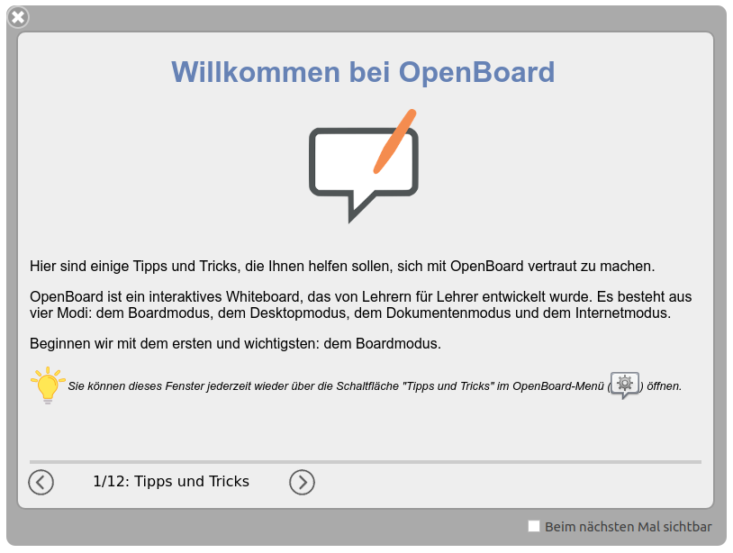

OpenBoard ist eine einfach zu bedienende, aber umfassende Software, und es dauert eine Weile, um alle Aspekte davon zu beherrschen.
Hier sind einige Tipps, um Ihnen beim Einstieg zu helfen.
Wenn Sie OpenBoard zum ersten Mal starten, öffnet sich ein Fenster, um Sie willkommen zu heißen und die Software vorzustellen. Nehmen Sie sich Zeit, die verschiedenen Seiten zu lesen, die Ihnen beim Einstieg in die Software helfen werden!
Sie können dieses Fenster jederzeit über die Schaltfläche "Tipps und Tricks" im OpenBoard-Menü oben rechts in der Anwendung erneut öffnen.

Auf dieser Website finden Sie auch Dokumentationen, die OpenBoard und seine Funktionen vorstellen. Schauen Sie gerne mal rein, indem Sie hier klicken!
Wenn Sie in den vorherigen Informationen nicht die Hilfe gefunden haben, die Sie suchen, können Sie eine Frage auf der Plattform GitHub stellen, um Unterstützung von der OpenBoard-Community zu erhalten: Folgen Sie diesem Link.
Vergessen Sie nicht, dass GitHub eine internationale Plattform ist, an der viele Nationalitäten teilnehmen. Die verwendete Sprache für die Kommunikation ist Englisch, damit jeder von Ihren Austauschen profitieren kann!